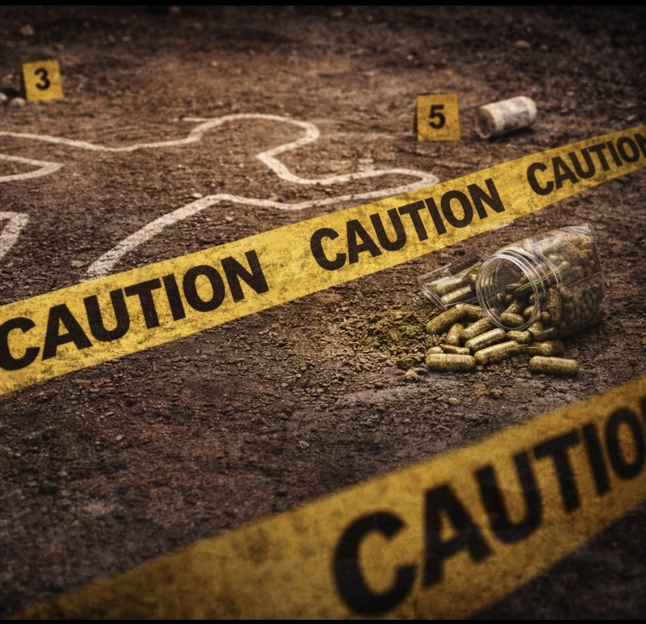
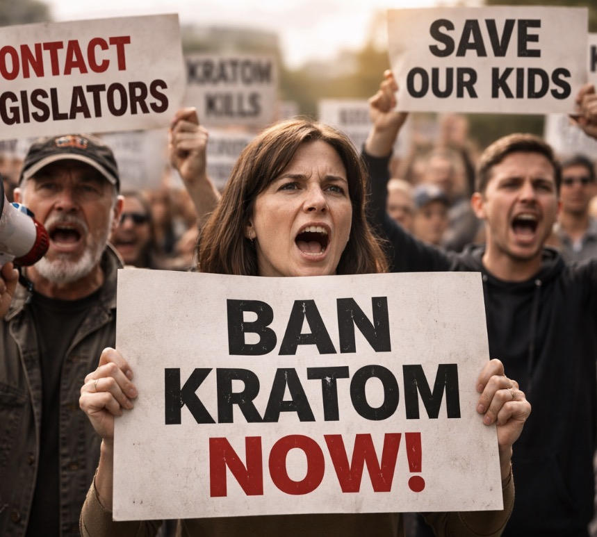
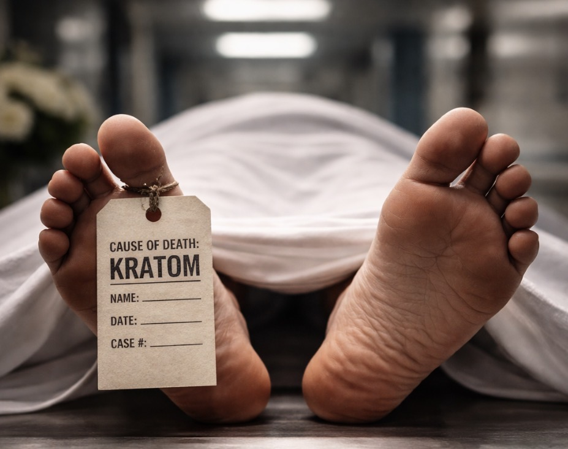
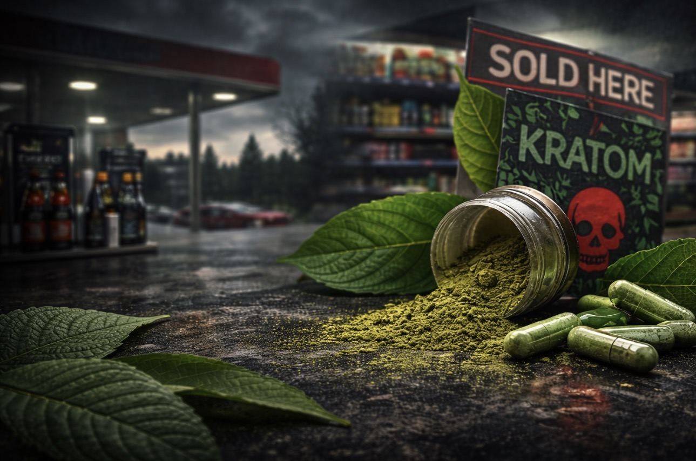

LEARN THE FACTS. EXPOSE THE DANGERS. FIGHT FOR A BAN
SEE THE EVIDENCE FOLLOW THE MONEY ACT NOWSee the shocking facts and research on kratom-related deaths and injuries.
SEE THE EVIDENCE
Contact legislators and demand action to ban this dangerous drug.
ACT NOW

Hear from devastated parents whose kids were harmed by kratom.
HEAR THEIR STORIES →